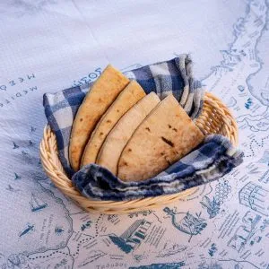
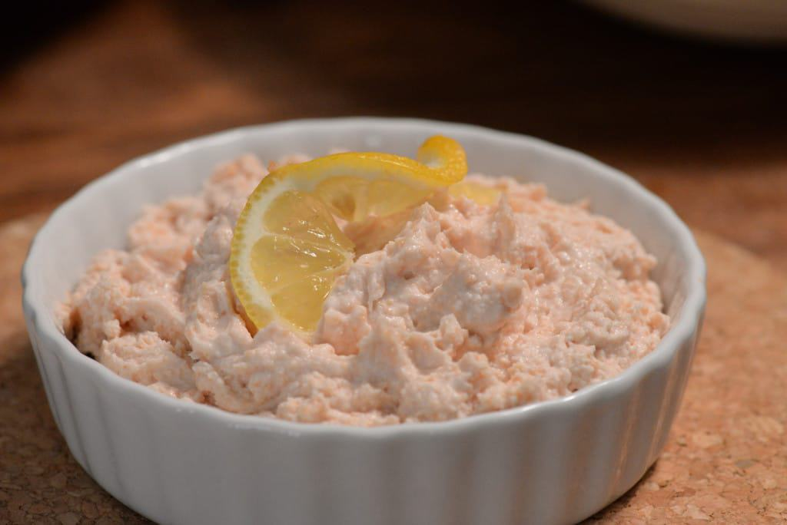
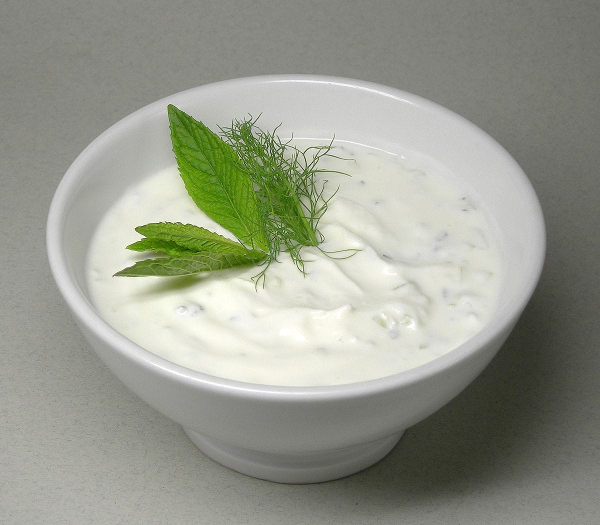
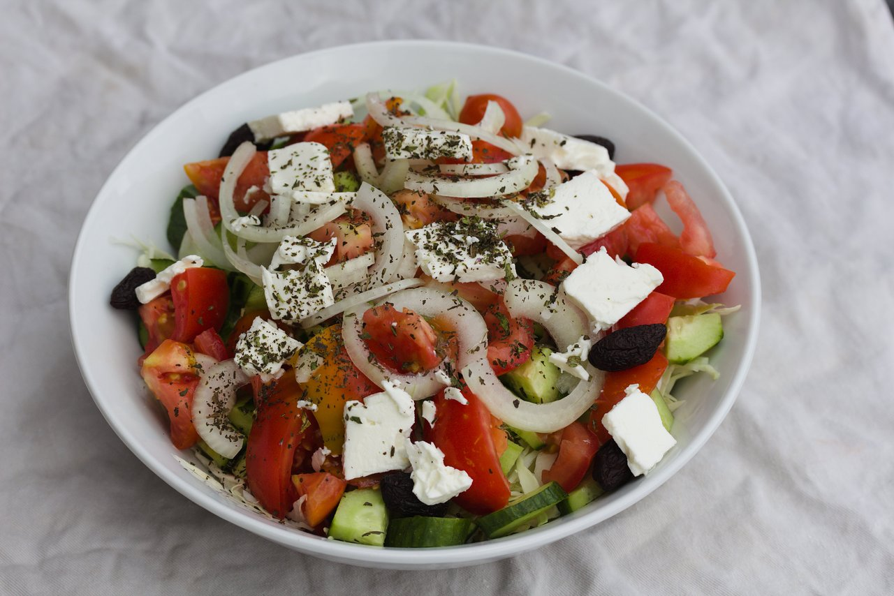
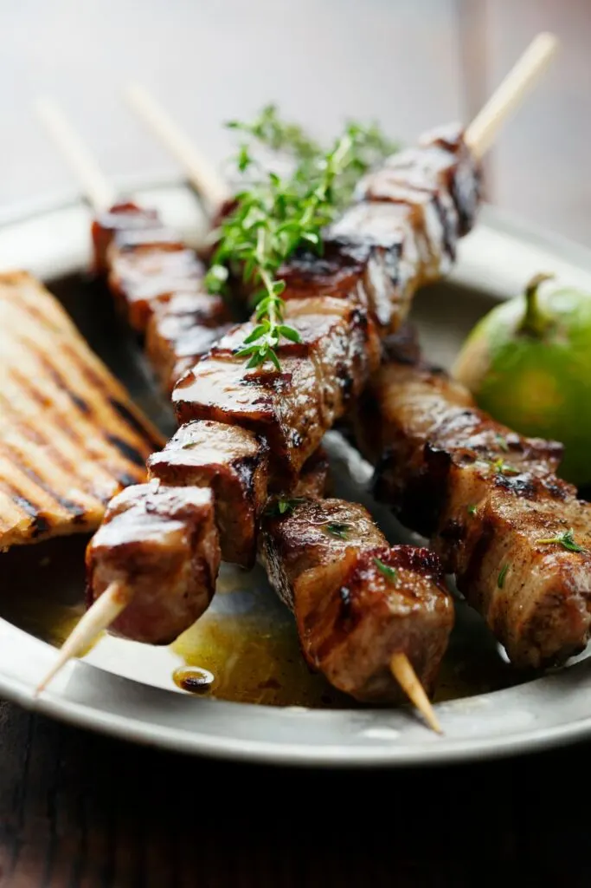
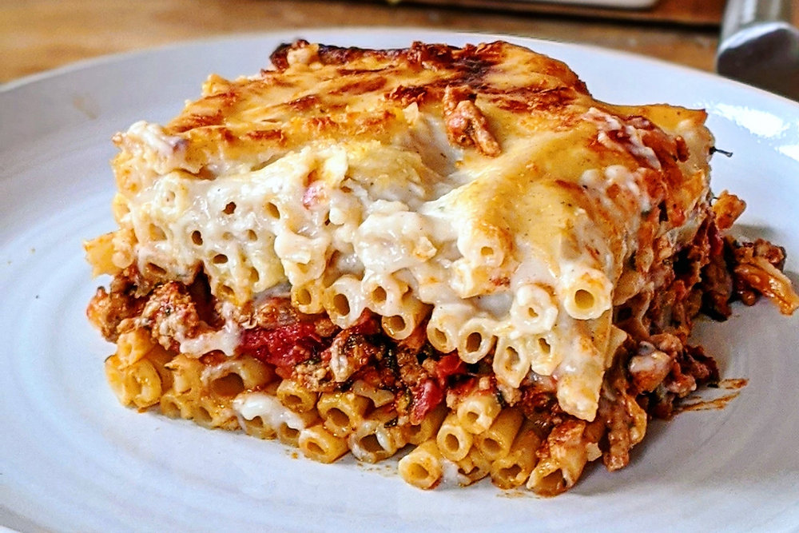
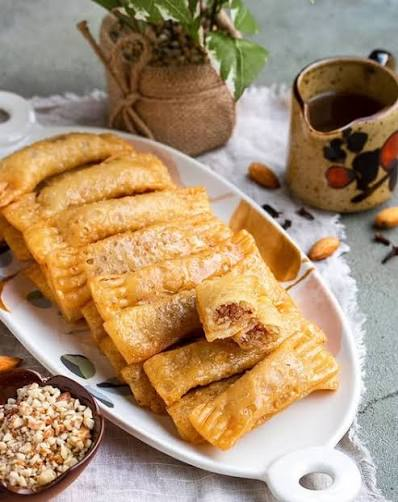
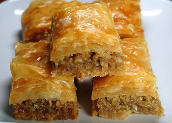
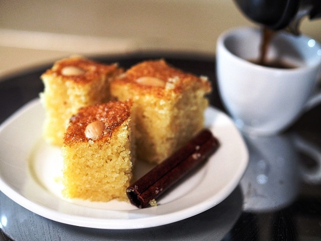

MEZE (Recommended) - €20 per person
A traditional assortment of small Cypriot dishes made for sharing and enjoying together.
STARTERS

Pitta Bread
Traditional Cypriot flatbread served with various dips.

Tahini
Smooth sesame paste used as a base for various dips.

Taramosalata
Traditional Cypriot fish roe dip with lemon and olive oil.

Tzatziki
Refreshment yogurt dip with cucumber and garlic.

Greek Salad
Fresh salad with tomatoes, cucumbers, olives, and feta cheese.

Green Olives
Marinated green olives with herbs and spices.

Halloumi Cheese
Traditional Cypriot cheese with a distinctive taste and texture.

Loukaniko (Cypriot Sausage)
Traditional Cypriot sausage with a distinctive taste and texture.
MAIN DISHES

Sheftalia
Traditional Cypriot dish made with minced meat and vegetables.

Pork Souvlaki
Traditional Cypriot dish made with grilled pork and vegetables.

Koupepia
Traditional Cypriot dish made with minced meat and rice wrapped in grape leaves.

Kleftiko
Traditional Cypriot dish made with slow-cooked lamb and vegetables.

Cypriot Fries
Crispy golden fries served with a side of ketchup or mayo.

Pastitsio
Traditional Cypriot dish made with layers of pasta and pork meat.

Pilafi
Traditional Cypriot side dish made with tomato, rice, and herbs.

Zucchini with Eggs
Traditional Cypriot dish made with zucchini and eggs.
DESSERTS (YOU GET ONE OF THOSE)

Galaktoboureko
Traditional Cypriot dessert made with milk, sugar, and sesame seeds.

Daktila
Traditional Cypriot dessert made with filling of nuts and syrup, shaped like fingers.

Baklava
Traditional Cypriot dessert made with layers of phyllo dough, nuts, and syrup.

Kalo Prama
Traditional Cypriot dessert made with semolina, sugar, and cinnamon.
BREAKFAST
Enjoy traditional cypriot breakfast